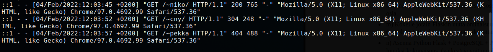
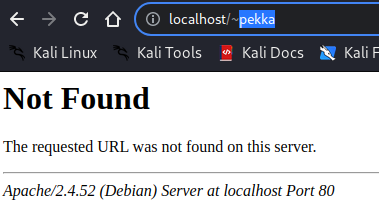

Apache lokimerkinnät
*Ensimmäinen rivi kuvasta
- ::1 //oopback osoite
- - - //jotain tietoa puuttuu (???)
- [04/Feb/2022:12:03:45 +0200] //Pvm, kellonaika ja aikavyöhyke
- "GET /~niko/ HTTP/1.1" //metodi - lähde - protokolla -
- 200 765 //Status "ok" / 765 (???)
- Mozilla/5.0 //Mozilla yhteensopiva selain
- X11; Linux x86_64 //Järjestelmä minkä päällä selain pyörii
- AppleWebKit/537.36 //UlkoasuaXXX ja versionumero
- (KHTML, like Gecko) Chrome/97.0.4692.99 Safari/537.36" //Tästä voi päätellä että käytössä on Chrome tai Chromium selain
Ylemmän kuvan viimeisellä rivillä olen yrittänyt hakea käyttäjän "pekka" käyttäjäsivua, jota ei ollut olemassa - siitä seurasi 404 statuskoodi "Page not found" 